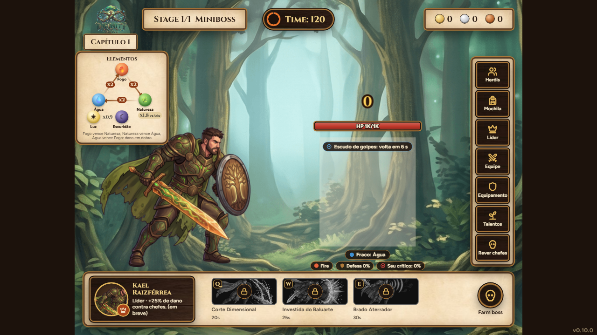
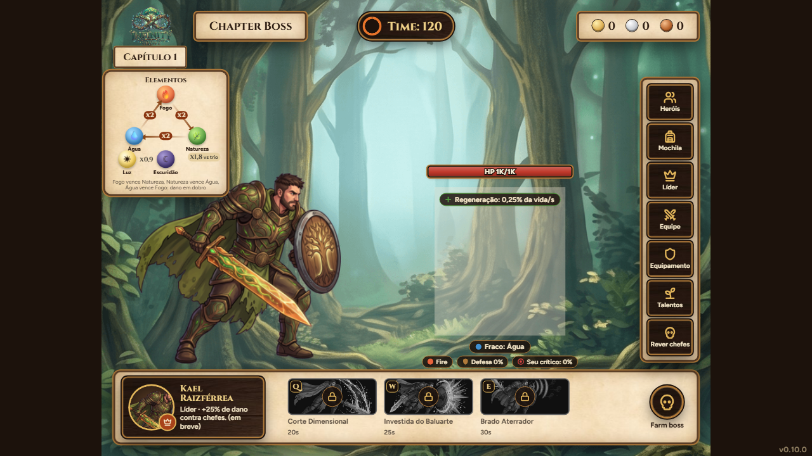
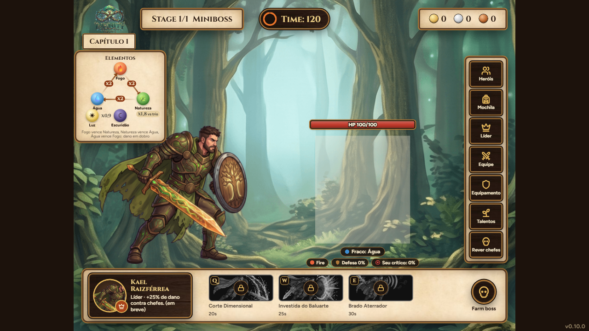
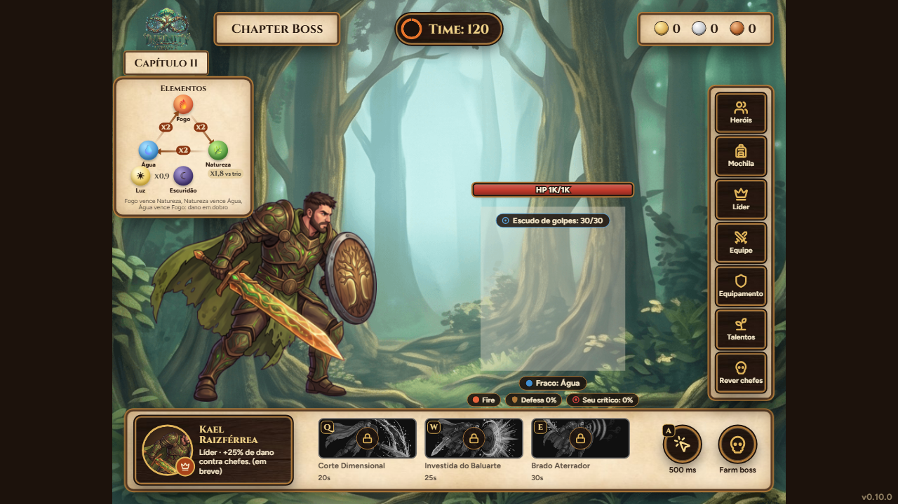
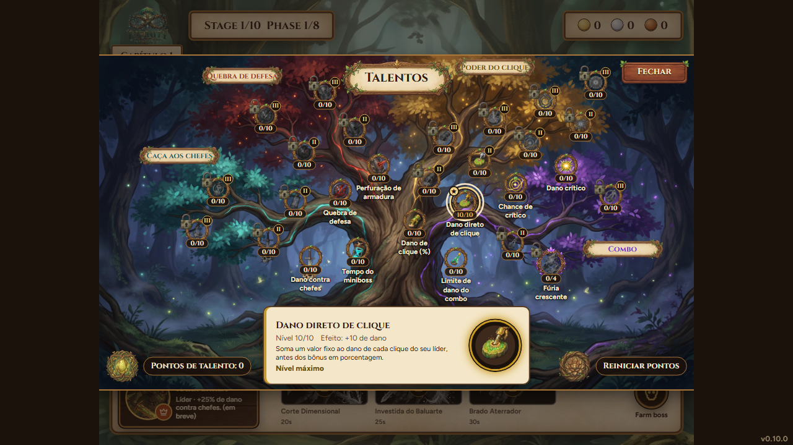
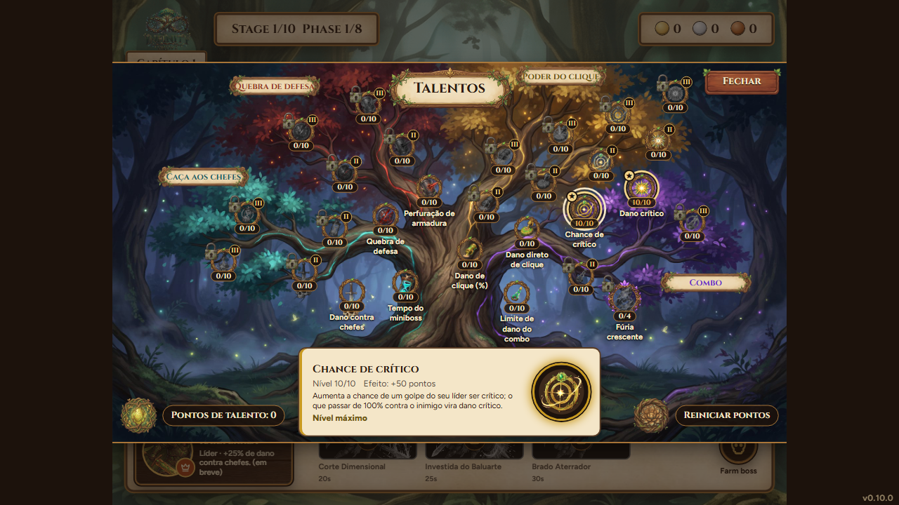
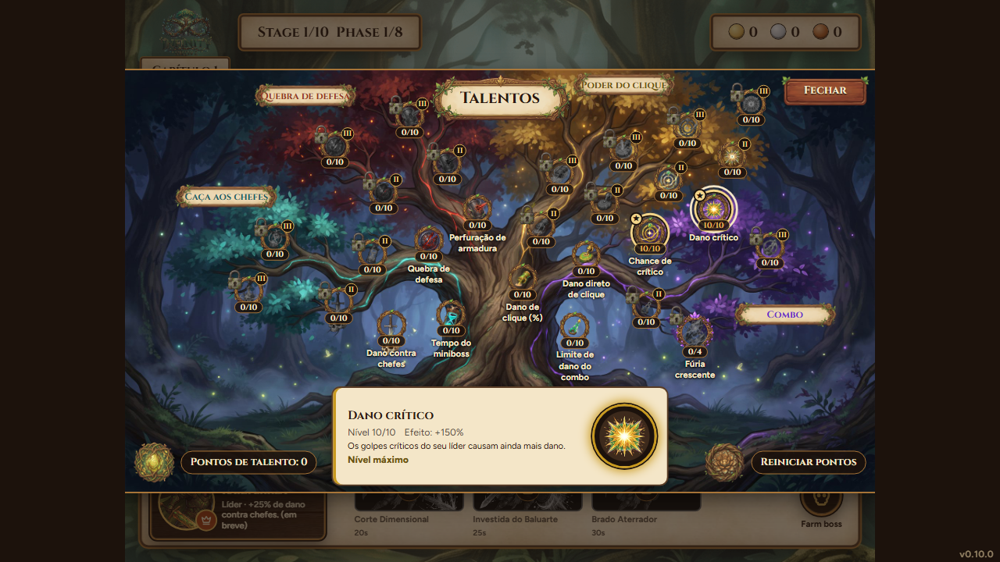
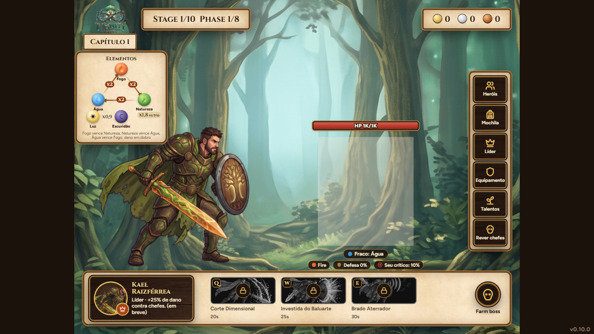
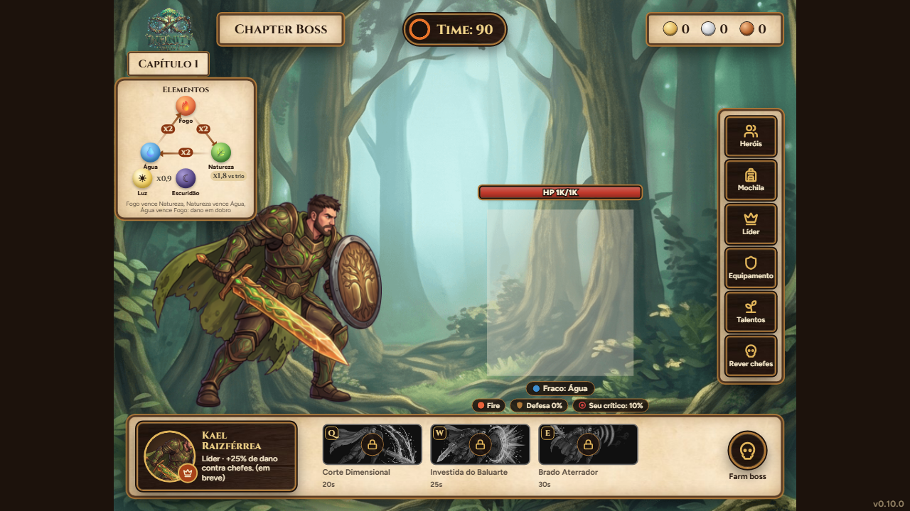

Infinity Grove · Revisão de UI
Rebalanceamento do início do jogo
O chip de afixo dos quatro tipos e seus estados, os cartões de talento com os valores novos e o HUD do capítulo 1 (8 fases, 45 s e 90 s) estão legíveis, alinhados ao estilo do jogo e fiéis à spec. Nenhum defeito encontrado. O monstro aparece como retângulo cinza porque o backend falso não serve o sprite; isso vem da fixture, não da feature.
12
telas e estados verificados
15
capturas (desktop)
0
achados de severidade alta
0
achados médios e baixos
Fidelidade à spec
- ✓Chip no topo do corpo do monstro, centrado em x 670, dentro de y 322 a 350, sem sobrepor a barra de vida (topo y 281), o alvo nem a caixa do inimigo (y 556 a 636).
Affix Display - ✓Texto Figtree 700 de 12 px em pergaminho sobre chip escuro, borda e ícone na cor do tipo (#b07a3a, #5aa0d8, #4f9a3c, #8a9aa6), texto nunca cortado.
Affix Display - ✓Quatro tipos com ícone próprio (hexágono, anel, cruz, placa) e um chip por estado do Escudo (cheio, parcial, caído).
Affix Display - ✓Textos em português exatamente como na spec: Carapaça, Escudo de golpes, Regeneração (vírgula decimal), Blindado, formato curto 1.2K.
Player-Facing Texts - ✓Chip oculto quando o monstro não tem afixo; chefe do capítulo 11 mostra o afixo.
Display AC 5 - ✓Cartões de talento com os valores novos: +10 de dano, +50 pontos, +150%.
Talent Change - ✓Rótulo Stage 1/10 Phase 1/8 e cronômetros 45 s e 90 s do capítulo 1.
Chapter Table
Capturas
Luta: chip de afixo




Talentos



HUD do capítulo 1


Achados
Nenhum achado.
Sugestões
- ✦O chip de Escudo caído (volta em 6 s) é o mais largo dos textos fixos; se um dia passar de 240 px com números grandes, vale revisar o formato curto nele também.
Console e recursos
Nenhum erro nem recurso faltando. Todas as imagens carregaram antes de cada captura; o console do navegador não foi lido pelo Playwright.